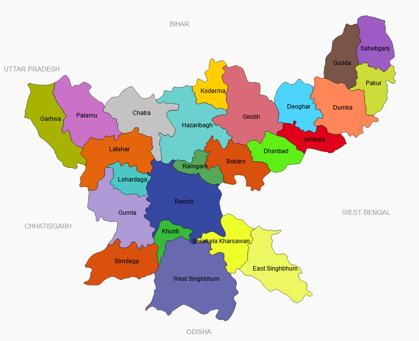

| While it is on the Chhotanagpur plateau, one of the oldest land formations in the world, Jharkhand the 28th state of India. With nearly one-third of its total area under forest cover, Jharkhand is rightfully called the “land of forests”. The lush green forests, rivers and waterfalls of this primeval land are home to many kinds of spectacular flora and fauna. Age-old tribes are the main inhabit of this wonderful land, the state is also a hubs of industry, commerce and education. A treasure-trove of minerals comprises 40 per cent of the mineral wealth of the country ranking first in the production of coal, mica and iron and helps in making Jharkhand one of the richest state of india in natural resources.The State of Jharkhand is endowed with immense bio-diversity, moderate climate, rich cultural and historical heritage, religious places of worship and ethnic aspects to make the State the ultimate destination for tourists.The tribes of Jharkhand consist of 32 tribes inhabiting the Jharkhand state in India. The tribes in Jharkhand were originally classified on the basis of their cultural types by the Indian anthropologist, Lalita Prasad Vidyarthi. On the right side district map of Jharkhand is displayed. |  |
History of Jharkhand is closely linked with 6th and 7th Century BC at the era of Mahabharata the "Kikat" Pradesh mentioned in the Rig Veda, was located in the Parasnath Hills in Giridih district, Jharkhand. This enormous wealth of past times, civilized existence, human societies and their cultural patterns, survive in caves and temples. Over the centuries, Mughal and British has define the Jharkhand in other way For the Mughals, who called it Kokrah, it contained mythical riches; for the mercantile British, it existed to be exploited and tamed- and divide into prosaically named ‘provinces’ According to some historians, there was already a distinct geo-political, cultural entity called Jharkhand even before the period of Magadha Empire. Many scholars now believe that the language used by tribes in the state of Jharkhand is identical to the one used by Harappa people.
The dynamics of resources and the politics of development still influence the socio-economic structures in Jharkhand, which was carved out of the relatively underdeveloped southern part of Bihar. According to the 1991 census, the state has a population of over 20 million out of which 28% is tribal while 12% of the people belong to scheduled castes. Jharkhand has 24 districts, 260 blocks, and 32,620 villages out of which only 45% have access to electricity while only 8,484 are connected by roads. Jharkhand is the leading producer of mineral wealth in the country after Chhattisgarh state, endowed as it is with a vast variety of minerals like iron ore, coal, copper ore, mica, bauxite, graphite, limestone, and uranium. Jharkhand is also known for its vast forest resources.